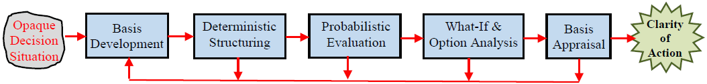

Making Data-informed Rational Decisions in a Complex and Uncertain World  The Decision Analysis Cycle/Process A Course Offered in the MSc(ISE), MSc(MOTI), MSc(SCM), MSc(ES), MSc(STO), MEng & PhD Programs.